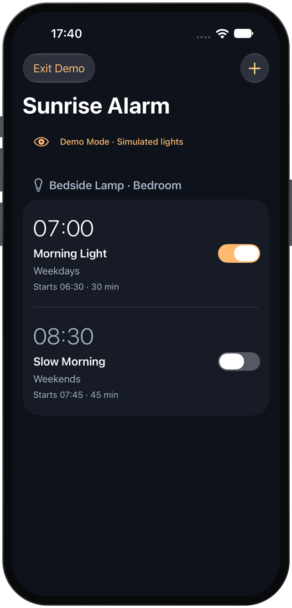
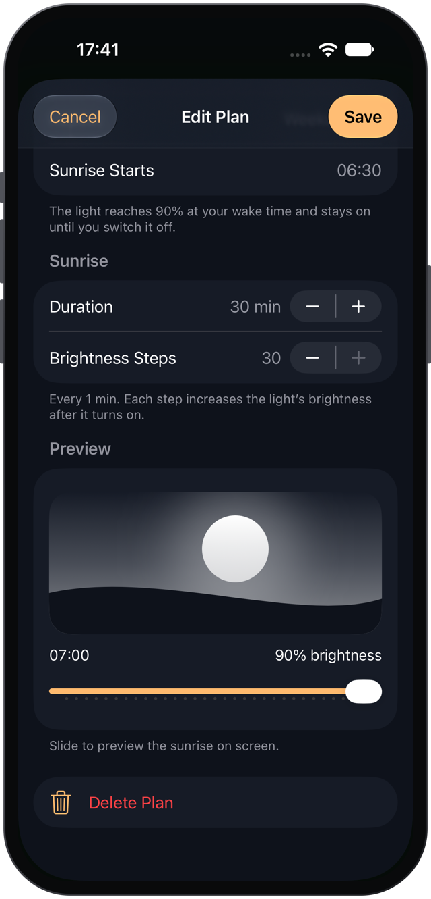
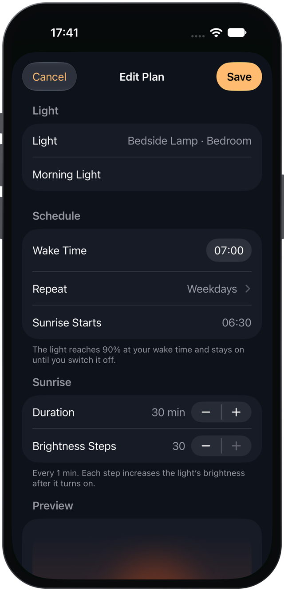

A sunrise for your schedule
Choose a wake time and repeat days. Set a different plan for weekdays and weekends, and pause either plan from the list.

Turn a compatible Apple Home light into a sunrise that gets brighter before you wake.
Explore the features
Choose a wake time and repeat days. Set a different plan for weekdays and weekends, and pause either plan from the list.

Choose how long your light takes to brighten and how many steps it uses. Try the on-screen preview before you save.

Use a dimmable color light and a connected HomePod or Apple TV as your home hub. With Demo Mode, you can explore the app before connecting your home.
See setup and demo guides